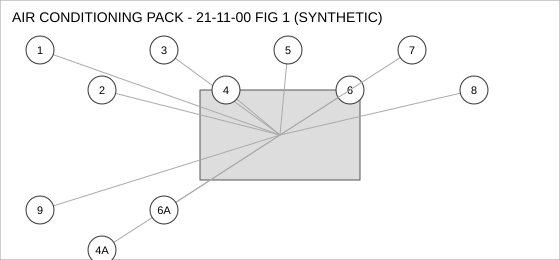
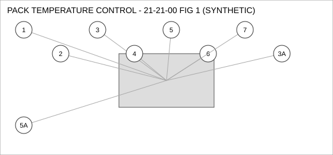
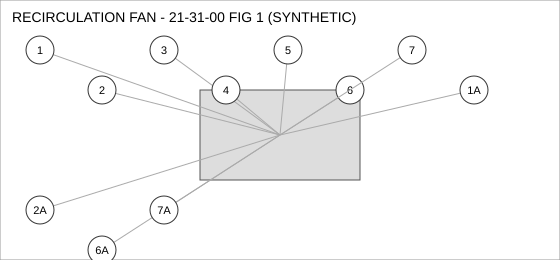
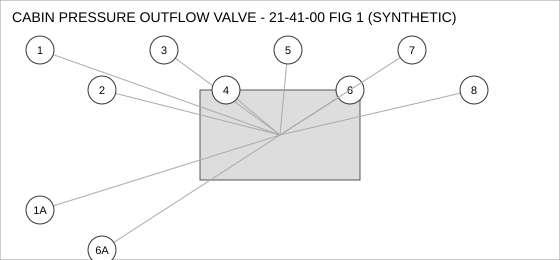

Document type: IPC | Revision: 15 | Fleet: B737
| CODE | AIRCRAFT |
|---|---|
| A | 737-700 |
| B | 737-800 |
| C | 737-MAX8 |

| FIG ITEM | PART NUMBER | NOMENCLATURE | EFFECT | UPA |
|---|---|---|---|---|
| 1 | 60-87397-14 | SENSOR - PRESSURE, AIR CONDITIONING PACK | B C | 1 |
| 2 | 65-76237-20 | VALVE - CHECK, AIR CONDITIONING PACK | ALL | 1 |
| 3 | 285-64987-08 | BRACKET - MOUNTING, AIR CONDITIONING PACK | ALL | 2 |
| 4 | 60-30926-23 | CLAMP - V-BAND, AIR CONDITIONING PACK | ALL | 2 |
| SUPERSEDED BY 69-99593-21 | ||||
| 4A | 69-99593-21 | CLAMP - V-BAND, AIR CONDITIONING PACK | ALL | 2 |
| SUPERSEDES 60-30926-23. 60-30926-23 IS NOT INTERCHANGEABLE WITH THIS PART (ONE-WAY). | ||||
| 5 | 65-54118-04 | HOSE ASSEMBLY, AIR CONDITIONING PACK | ALL | 1 |
| 6 | 69-89131-09 | FILTER ELEMENT, AIR CONDITIONING PACK | ALL | 1 |
| SUPERSEDED BY 69-93886-23 | ||||
| 6A | 69-93886-23 | FILTER ELEMENT, AIR CONDITIONING PACK | ALL | 1 |
| SUPERSEDES 69-89131-09. 69-89131-09 IS NOT INTERCHANGEABLE WITH THIS PART (ONE-WAY). | ||||
| 7 | 60-59615-03 | COUPLING - QUICK DISCONNECT, AIR CONDITIONING PACK | ALL | 4 |
| 8 | 285-57400-19 | ACTUATOR - LINEAR, AIR CONDITIONING PACK | A B | 1 |
| 9 | 65-47930-03 | PUMP - TRANSFER, AIR CONDITIONING PACK | ALL | 1 |

| FIG ITEM | PART NUMBER | NOMENCLATURE | EFFECT | UPA |
|---|---|---|---|---|
| 1 | 162-61856-29 | VALVE - SHUTOFF, PACK TEMPERATURE CONTROL | ALL | 2 |
| 2 | 65-83579-18 | ACTUATOR - LINEAR, PACK TEMPERATURE CONTROL | ALL | 1 |
| 3 | 285-62350-12 | SWITCH - PRESSURE, PACK TEMPERATURE CONTROL | ALL | 1 |
| 3A | 60-44522-17 | SWITCH - PRESSURE, PACK TEMPERATURE CONTROL | ALL | 1 |
| ALTERNATE FOR 285-62350-12. PARTS ARE INTERCHANGEABLE. | ||||
| 4 | 60-16175-28 | BRACKET - MOUNTING, PACK TEMPERATURE CONTROL | ALL | 1 |
| 5 | 162-88172-03 | SENSOR - TEMPERATURE, PACK TEMPERATURE CONTROL | C | 2 |
| 5A | 285-36071-05 | SENSOR - TEMPERATURE, PACK TEMPERATURE CONTROL | C | 2 |
| ALTERNATE FOR 162-88172-03 AFTER INCORPORATION OF SB 21-2217. | ||||
| 6 | 162-79352-09 | SEAL - FLANGE, PACK TEMPERATURE CONTROL | ALL | 4 |
| 7 | 60-99353-29 | SOLENOID, PACK TEMPERATURE CONTROL | C | 4 |

| FIG ITEM | PART NUMBER | NOMENCLATURE | EFFECT | UPA |
|---|---|---|---|---|
| 1 | 60-79822-25 | PUMP - TRANSFER, RECIRCULATION FAN | C | 1 |
| 1A | 162-38080-18 | PUMP - TRANSFER, RECIRCULATION FAN | C | 1 |
| INTERCHANGEABLE WITH 60-79822-25 (TWO-WAY). | ||||
| 2 | 285-31643-09 | DUCT - FLEXIBLE, RECIRCULATION FAN | C | 4 |
| SUPERSEDED BY 162-34957-04 | ||||
| 2A | 162-34957-04 | DUCT - FLEXIBLE, RECIRCULATION FAN | C | 4 |
| REPLACES 285-31643-09. THIS PART MAY REPLACE 285-31643-09; 285-31643-09 MAY NOT BE USED TO REPLACE THIS PART. | ||||
| 3 | 65-80686-25 | CLAMP - V-BAND, RECIRCULATION FAN | ALL | 1 |
| 4 | 69-67422-29 | VALVE - SHUTOFF, RECIRCULATION FAN | ALL | 4 |
| 5 | 65-18392-11 | FITTING - ELBOW, RECIRCULATION FAN | ALL | 1 |
| 6 | 285-38864-01 | SENSOR - TEMPERATURE, RECIRCULATION FAN | ALL | 1 |
| 6A | 60-17944-13 | SENSOR - TEMPERATURE, RECIRCULATION FAN | ALL | 1 |
| ALTERNATE FOR 285-38864-01 AFTER INCORPORATION OF SB 21-0388. | ||||
| 7 | 65-18834-29 | WASHER - LOCK, RECIRCULATION FAN | C | 1 |
| 7A | 162-28373-14 | WASHER - LOCK, RECIRCULATION FAN | C | 1 |
| INTERCHANGEABLE WITH 65-18834-29 (TWO-WAY). | ||||

| FIG ITEM | PART NUMBER | NOMENCLATURE | EFFECT | UPA |
|---|---|---|---|---|
| 1 | 65-31798-14 | CLAMP - V-BAND, CABIN PRESSURE OUTFLOW VALVE | B C | 2 |
| 1A | 65-85880-20 | CLAMP - V-BAND, CABIN PRESSURE OUTFLOW VALVE | A B | 2 |
| ALTERNATE FOR 65-31798-14 ON 737-800 ONLY. | ||||
| 2 | 162-17685-06 | SENSOR - TEMPERATURE, CABIN PRESSURE OUTFLOW VALVE | ALL | 2 |
| 3 | 69-69638-10 | BOLT, CABIN PRESSURE OUTFLOW VALVE | A | 2 |
| 4 | 285-96752-23 | GASKET, CABIN PRESSURE OUTFLOW VALVE | A | 2 |
| 5 | 65-17665-19 | SENSOR - PRESSURE, CABIN PRESSURE OUTFLOW VALVE | ALL | 4 |
| 6 | 60-16572-19 | VALVE - SHUTOFF, CABIN PRESSURE OUTFLOW VALVE | C | 2 |
| 6A | 65-44814-13 | VALVE - SHUTOFF, CABIN PRESSURE OUTFLOW VALVE | C | 2 |
| INTERCHANGEABLE WITH 60-16572-19 WHEN SB 21-0388 IS EMBODIED. | ||||
| 7 | 285-30635-02 | VALVE - CHECK, CABIN PRESSURE OUTFLOW VALVE | B C | 4 |
| 8 | 60-87992-03 | WASHER - LOCK, CABIN PRESSURE OUTFLOW VALVE | B C | 1 |